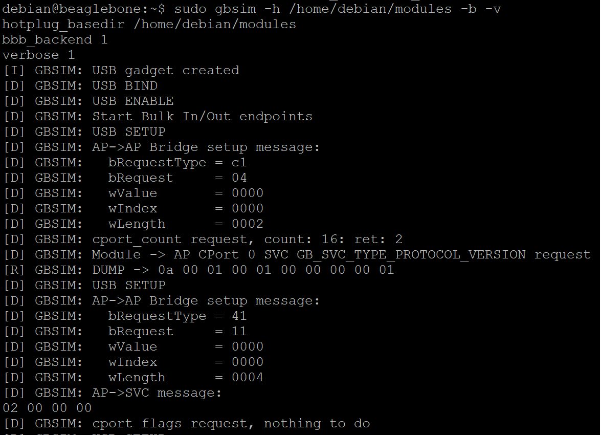
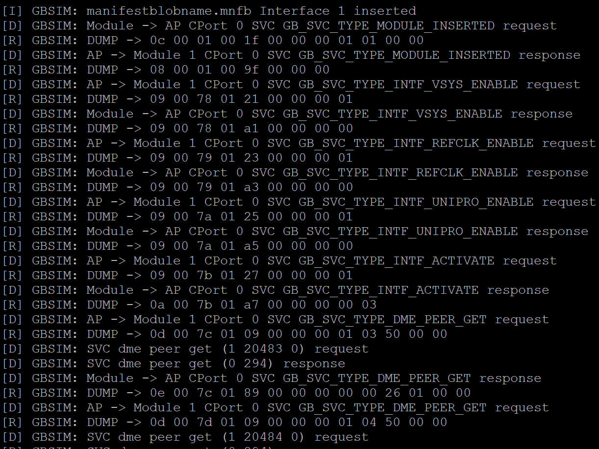
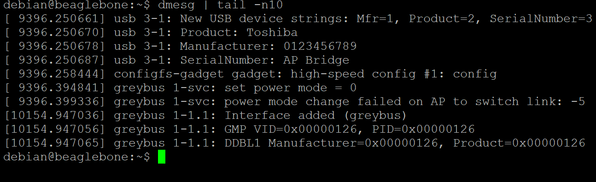
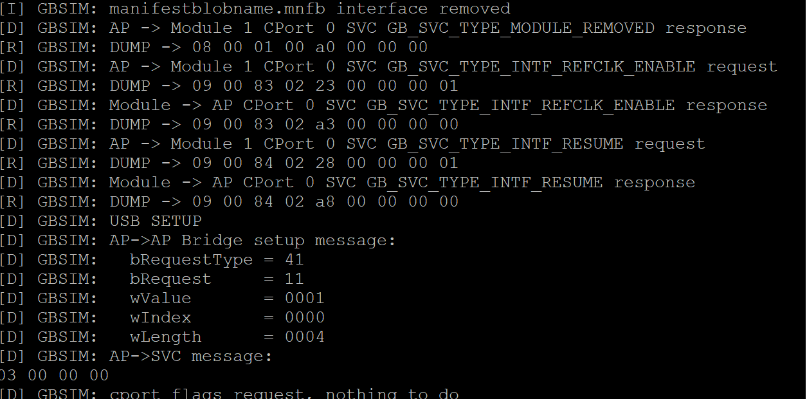
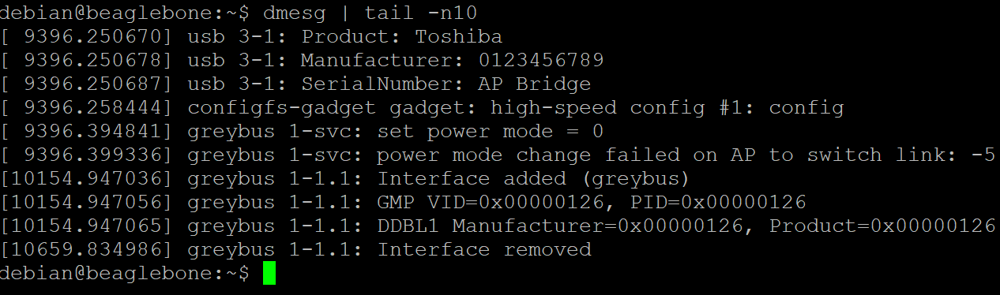

Installing Greybus Simulator
This post contains the information about installation and setting up of the Greybus Simulator(GBSIM) on the latest Beagleboard.org image. The details of the image used are:
debian@beaglebone:~$ uname -a
Linux beaglebone 4.14.108-ti-r106 #1 SMP PREEMPT Fri May 24 22:12:34 UTC 2019 armv7l GNU/Linux
debian@beaglebone:~$ cat /etc/dogtag
BeagleBoard.org Debian Image 2018-10-07If you are running an image older than this please update the kernel using these commands
cd /opt/scripts/tools/
git pull
sudo ./update_kernel.sh
sudo rebootInstalling GBSIM using the installation script
An installation script has been provided with GBSIM for easy installation and setting it up as a startup service, for installing the gbsim and other dependencies perform the following commands:git clone https://github.com/vaishnav98/gbsim.git
cd gbsim
sudo ./install.shInstalling GBSIM Manually
Install Dependencies and Kernel Headers
Install the Following tools and kernel headers which is required for building the dummy_hcd driver from sources
sudo apt-get update
sudo apt-get install build-essential libtool autoconf libconfig-dev
sudo apt-get install linux-headers-`uname -r`Build and Install required dependencies from sources
Build and install the Dependencies(libsoc and libusbgx) from sources
git clone https://github.com/jackmitch/libsoc.git
cd libsoc
autoreconf -i
./configure
make
sudo make install
git clone https://github.com/libusbgx/libusbgx.git
cd libusbgx
autoreconf -i
./configure
make
sudo make install
sudo ldconfig
Build and Install gbsim from sources
git clone https://github.com/vaishnav98/gbsim.git
cd gbsim
./autogen.sh
./configure
make
make installBuild the dummy_hcd driver from source
mkdir dummy_hcd
cd dummy_hcd
wget https://raw.githubusercontent.com/vaishnav98/linux/4.14/drivers/usb/gadget/udc/dummy_hcd.c
nano Makefile
obj-m+=dummy_hcd.o
all:
make -C /lib/modules/$(shell uname -r)/build/ M=$(PWD) modules
clean:
make -C /lib/modules/$(shell uname -r)/build/ M=$(PWD) clean
make
sudo cp dummy_hcd.ko /lib/modules/`uname -r`/kernel/drivers/usb/gadget/legacy/
sudo depmodRunning the GBSIM
The path to hotplug-module directory is the root directory which conatins the hotplug-module directory
sudo modprobe greybus
sudo modprobe gb-es2
sudo modprobe gb-gbphy
sudo modprobe gb-i2c
sudo modprobe gb-spi
sudo modprobe gb-gpio
sudo modprobe gb-uart
modprobe configfs
sudo mount -t configfs none /sys/kernel/config
modprobe libcomposite
sudo modprobe dummy_hcd num=1(Number of Mikrobus Ports 1-4)
mkdir -p /tmp/gbsim0/hotplug-module
gbsim -g 0 -h /tmp/gbsim0/ -c 0 -s 1 -i 1The output should be similar to this:
At this point, it's possible to hot plug/unplug modules by simply copying or removing a conformant manifest blob file in the /path/to/hotplug-module directory.
Creating Manifest Blob and Testing GBSIM
git clone https://github.com/projectara/manifesto.git
cd manifesto
./manifesto -o manifestblobname.mnfb manifests/gpio.mnfs
cp ./manifestblobname.mnfb /path/to/hotplug-module/
The output should be similar to this:
 The dmesg log output should be similar to this: Removing the Manifest blob
rm /path/to/hotplug-module/manifestblobname.mnfbThe output should be similar to this:
 The dmesg log output should be similar to this: 